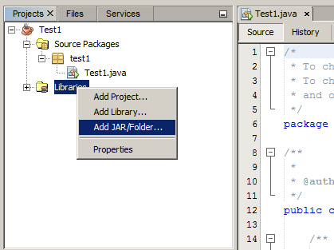

Başlamadan Önce¶
JnetPcap Nedir?¶
JnetPcap, Windows’ta WinPcap Linux’da libpcap arayüzü olan bir kütüphanedir. Bu kütüphane ile yapılabilecekler;
Ağ arayüzlerini listelemek
Bir ağ arayüzünü monitor moduna alarak paketleri dinlemek
Paket filtresi uygulayarak sadece istenilen paketlerin yakalanmasını sağlamak
Yakalanan paketleri daha sonra inceleyebilmek için bir PCAP dosyasına kaydetmek
Paketler oluşturarak bunları ağ arayüzü ile gönderebilmek
Ağ istatistiği toplamak
Biz burada Windows işletim sistemi kullanacağımız için WinPcap mutlaka bilgisayarımızda kurulu olmalıdır. Aksi takdirde JnetPcap tek başına bir işe yaramayacaktır.
İndirmiş olduğunuz JnetPcap zip dosyasını bir klasöre çıkarın ve içerisindeki jnetpcap.dll dosyasını Windows dizini altında bulunan system32(veya 64) içerisine atın. Çıkarmış olduğunuz bu jar dosyasının bulunduğu yeri unutmayın çünkü bu jar dosyasını daha sonra NetBeans’e tanıtacağız.
NetBeans İle Geliştirme Yapma¶
JnetPcap kütüphanesini geliştirebilmemiz için mutlaka NetBeans’de projemize tanıtmamız gerekir. Bunun için, proje sekmesinde Libraries üzerine sağ tıklıyoruz ve Add Jar/Folder’ı seçiyoruz. Daha sonra, jar dosyasını çıkardığımız yeri bulup projemize ekliyoruz. Artık geliştirme yapmaya hazırız.
{kind=link}